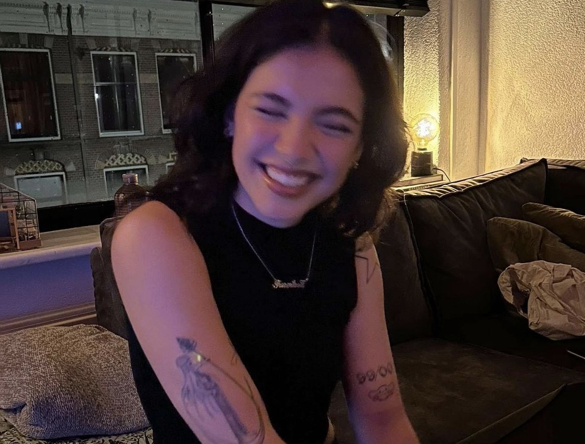

Wie ben ik?
Mijn naam is Mercedes Fuentes, 21 jaar en ik woon in Weesp. Mijn hele leven is echter in hartje Amsterdam; mijn school, mijn werk, mijn familie en vrienden. Aangezien ik groot filmliefhebber ben, kan je mij vaak vinden in de bioscopen en filmhuizen van Amsterdam.
Deze blog is ontstaan omdat ik graag mijn reis naar duurzaamheid en mijn liefde voor film wil combineren om zo mensen te inspireren hetzelfde te doen.